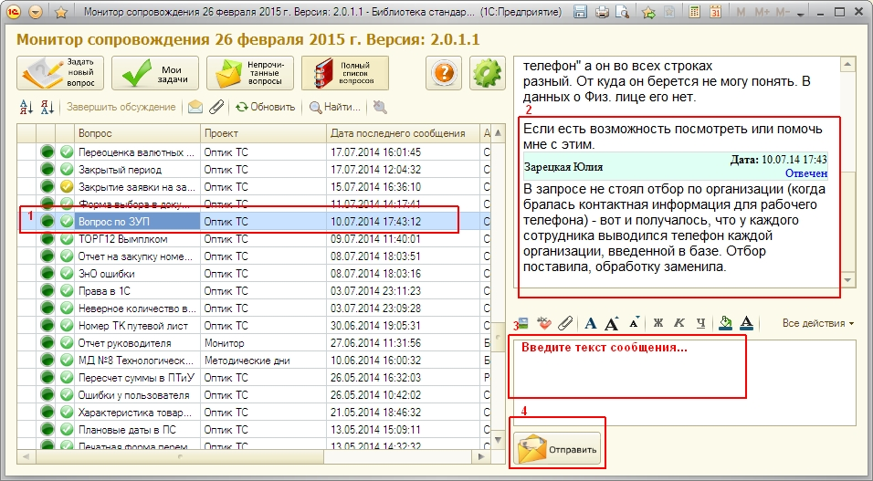

Обработка «Подключение к монитору сопровождения»
Обработка представляет собой интерфейс пользователя, содержащий список вопросов.
Общая схема работы:

1. Выделить интересующий вопрос
2. Прочитать обсуждение
3. Написать свой комментарий
4. Отправить сообщение в вопрос
Для удобства поиска вопросов, к которым были добавлены новые сообщения и которые могут требовать ответа или других действий пользователя, применяется выделение строк цветом:
Введены условные обозначения статусов вопросов иконками – кружками:
– новый вопрос,
– принятый к рассмотрению вопрос,
– отвеченный вопрос,
– закрытый или отмененный вопрос.
Введены условные обозначения приоритетов вопросов иконками – кружками:
– критический, решается с максимальным приоритетом у сотрудника независимо от проекта, поскольку обычно связано со сбоями, не позвоялющими работать в программе вовсе;
– высокий, решается с повышенным приоритетом в данном проекте;
– обычный, решается в порядке очереди в данном проекте;
– низкий, решается по остаточному принципу.
Основные реквизиты вопросов отображаются в списке вопросов, тексты сообщений выделенных вопросов расположены в правой части формы.
При двойном нажатии на строке, открывается окно (форма вопроса), в которой можно добавить сообщение к вопросу. Также сообщение в существующий вопрос можно добавить прямо из формы списка вопросов, поставив на него курсор в списке, напечатав сообщение в поле "Новое сообщение" и нажав кнопку "Отправить".
Команды формы:
-
- открывает форму нового вопроса
-
 - открывает список активных задач пользователя, по которым требуется выполнить какие-нибудь действия
- открывает список активных задач пользователя, по которым требуется выполнить какие-нибудь действия -
- открывает список непрочитанных вопросов - вопросов, в которые были добавлены новые сообщения, которые текущим пользователем еще не прочитаны
-
- для перехода к самому полному списку вопросов, доступных пользователю, без всяких отборов
-
- открывает справку
-
- открывает форму настроек
Команды списков:
 .
.